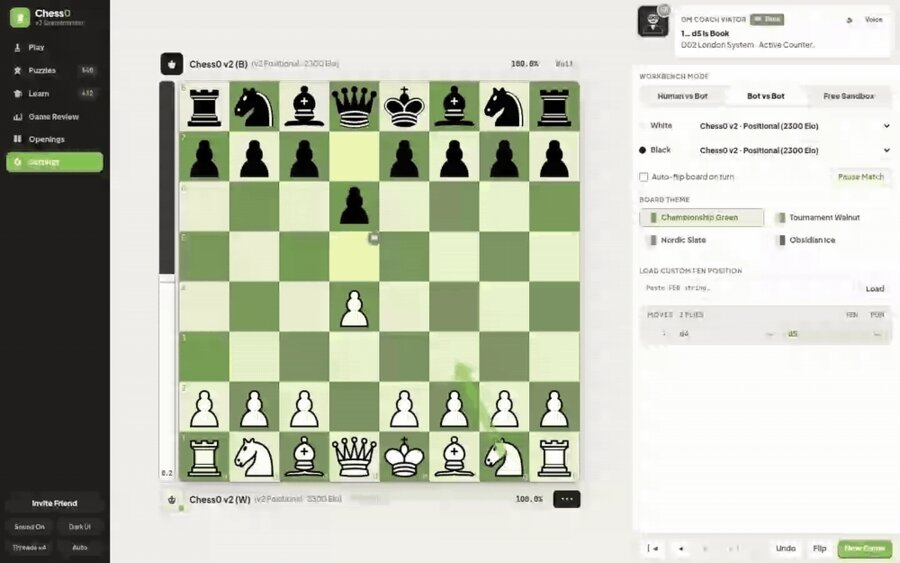

Sheet No. 01 · Field note
A very honest program
A chess engine will not pretend your move was good. That turns out to be the nicest thing about building one.
Most software is polite to a fault. A form tells you it saved when it didn't. A progress bar sits at 99% because 100% would mean admitting something finished. A recommendation engine calls a thing "for you" when it means "for the graph."
Chess0 has no manners. It is a chess engine written from nothing in TypeScript, and when I make a bad move it replies with a number. The number is the evaluation, and it is usually negative. There is no animation, no encouraging copy, no little mascot. Just a board, a clock, and the truth.
That was the whole reason I started it. I wanted a project where correctness was not a matter of taste.
No libraries, on purpose
There is a JavaScript chess library called chess.js. It handles the rules, the move generation, the weird edge cases, and it would have saved me a month. I didn't use it. I also didn't use an engine library, a search library, or an opening book. The only thing the browser gives me is a canvas, a Web Worker, and a keyboard.
So the rules are mine: castling rights, en passant, promotion, pins, checks, the fifty-move rule, threefold repetition. Every one of them is a small argument with yourself about what "the same position" actually means. You think you understand chess until you have to write down what makes two positions identical.
The search is three generations of alpha-beta, which sounds grander than it is. The first version was slow and correct. The second was faster and wrong in a new way. The third is the one that ships: a Web Worker doing about a million nodes per second, while the page stays smooth because the main thread is not invited.
The boring way to earn trust
Perft is the least glamorous idea in chess programming. You take a position, generate every legal move to a certain depth, and count the leaf nodes. Then you compare your count to the known number. If it matches at depth six, your move generator is probably not lying to you.
I ran perft until the numbers matched. Then I ran it again after every change that touched move generation, which is the programming equivalent of checking your pockets before leaving the house. It is tedious, and it is the only reason the rest of the engine is allowed to be clever.
This is the part that doesn't make it into a launch post. Nobody wants to see a table of node counts. But a chess engine without perft is a demo. With perft, it's a program you can trust with a position you actually care about.
The engine does not care that the board looks nice. That is exactly why I trust it.
What's still missing
The NNUE training pipeline is in the repo and not in the product. That's the honest version. A neural evaluation is the next real step, and I'd rather say "in the pipeline" than ship a half-trained network and call it done. There's also no opening book, which means the first eight moves are the engine thinking from first principles like the rest of us.

The live version runs at aryan007h.github.io/chess0. No install, no account, no download. You click a piece and the engine tells you what it thinks. Sometimes it thinks you're winning. More often it has a number for you.
I keep coming back to this project because it's the one that can't be faked. The UI can be pretty and the README can be confident, but the engine either finds the mate or it doesn't. There's a relief in that. Most of the things I build are judged by whether they feel right. This one is judged by whether it is right.
It is not always right. But it is never polite about it.
— 30 —
— Aryan